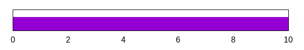
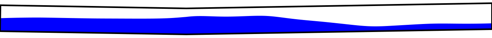

GPU accelerated mutli-phase flow simulation in flow assurance
Two-Fluid Model
The governing equations of the two-fluid model are conservation of the mass and momentum of the each phase (\(k=g,l\)). $$\frac{\partial(\alpha_k \rho_k)}{\partial t} + \frac{\partial(\alpha_k \rho_k u_k)}{\partial x} = 0$$ $$\frac{\partial (\alpha_k \rho_k u_k)}{\partial t} + \frac{\partial(\alpha_k \rho_k u_k^2 + \alpha_k p_k)}{\partial x} - p_i \frac{\partial \alpha_k}{\partial x}= S$$ It is well known that the 4-equation formulation of the two-fluid model is ill-posed. As a result, it is impossible to differentiate between the errors originating from uncertainty in the empirical closure models and the nonphysical oscillations due to ill-posedness of the equations. The present work uses a 5-equation formulation, by adding a volume fraction evolution equation: $$\frac{\partial \alpha_1}{\partial t} + u_i \frac{\partial \alpha_1}{\partial x} = r_p(p_g-p_l)$$ The new equation make the system unconditionally hyperbolic. To solve the resulting system of equations, a high-resolution Roe's scheme is developed and to keep the solution time practical an adaptive mesh refinement algorithm is implemented.
However the present method still is computationally expensive for practical applications. To overcome this problem the solver has been totally implemented on the GPU. This helped to achive up to 50X speedup compared to CPU based version of the code.
Other extensions have been also implemented. To obtain the wall shear stresses, a novel set of analytically developed friction equations is used for the non-Newtonian liquid phase.
The capability of the developed code has been examined for many test cases, such as the terrain slugging.
 This code is under heavy development, and we are currently working on the n-phase formulation for the compositional simulationsa and also heat transfer.